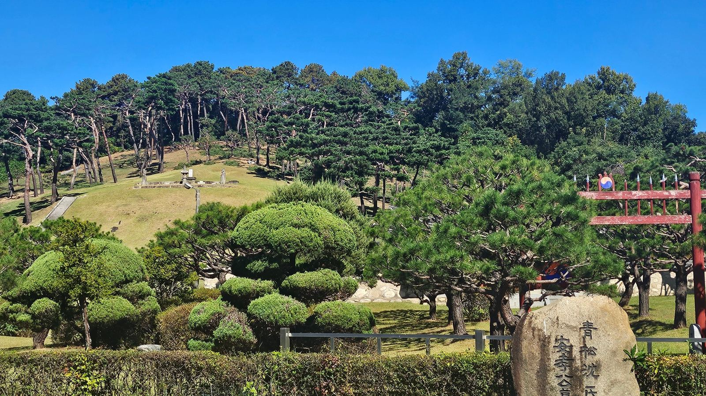
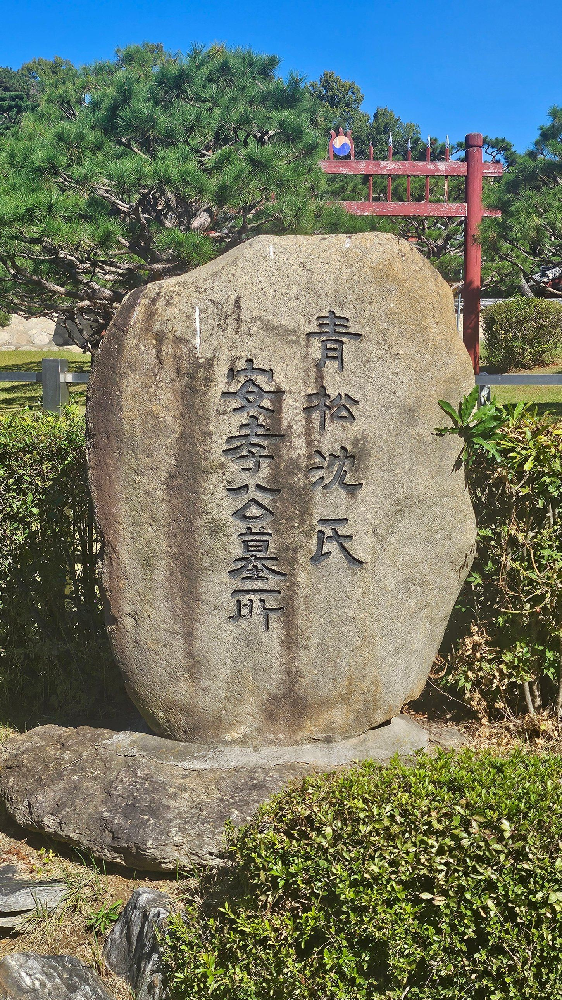
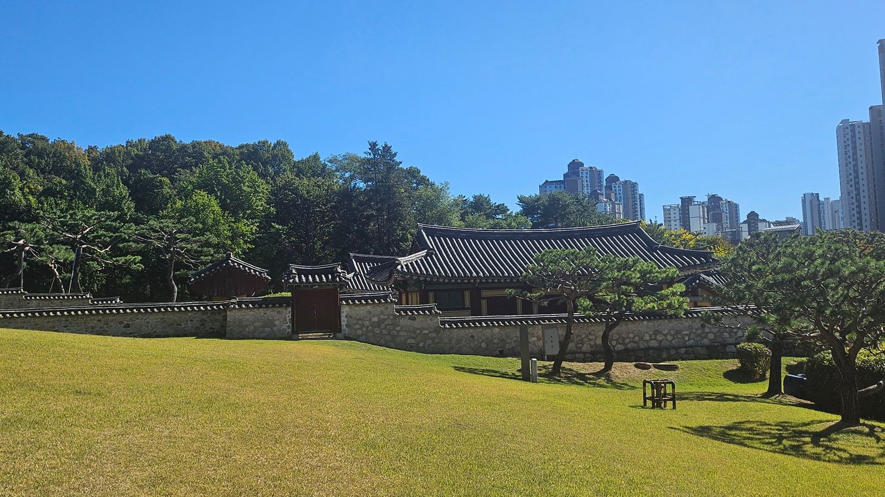
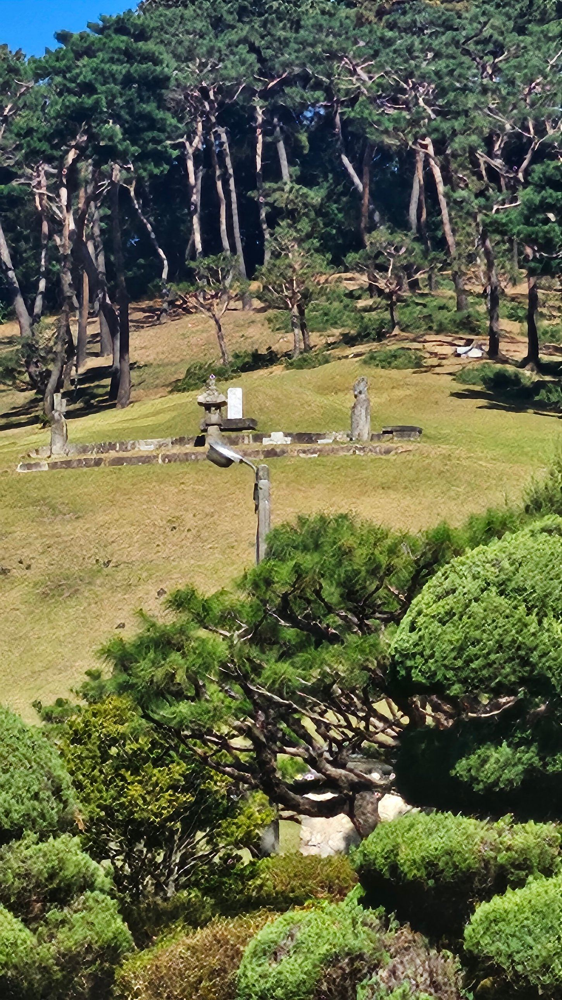
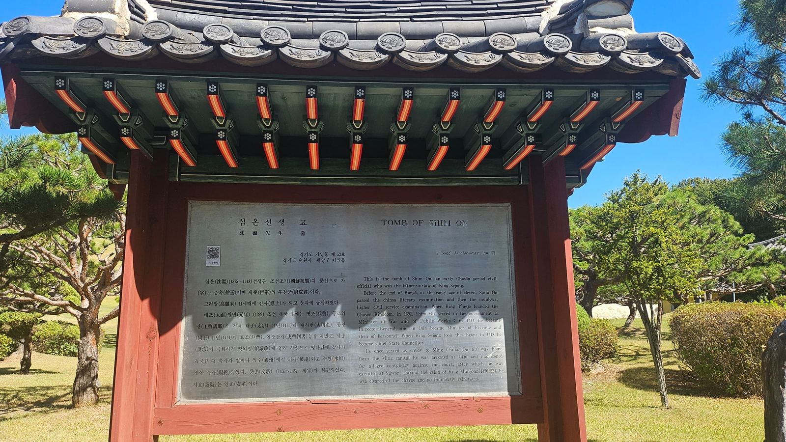

심온 묘 — 담장 밖에서, 사유지 너머의 외조부

심온의 묘는 문종의 외조부이자 세종의 장인이 묻힌 곳이다. 가면 묘역 앞에 서서 상설(석물)을 하나씩 짚어가며 쓸 생각이었다.
그런데 막상 가 보니 묘역은 청송 심씨 문중의 사유지였다. 참도도, 봉분도, 석물도 모두 담장과 거리 너머에 있었다. 그래서 이 글은 애초 계획과 다르게 쓰인다 — 가까이 다가가 본 기록이 아니라, 멀리서만 바라본 기록으로.

표지석에 새겨진 안효(安孝)는 심온의 시호다. 왕이나 세자의 능이 아니라 한 사대부 집안의 선산이니, 여기서부터는 국가가 관리하는 능역의 문법이 아니라 문중이 관리하는 묘역의 문법을 따른다. 표지석을 지나면 거기서부터는 청송 심씨 가문의 땅이다.

심온이 세상을 떠난 15세기의 수원과, 지금의 수원 영통은 같은 땅이라고 믿기 어려울 만큼 다르다. 묘역을 둘러싼 소나무 숲 바로 뒤로 고층 아파트가 줄지어 서 있다. 600년 전 사약을 받은 한 재상의 무덤이, 신도시 한복판에 섬처럼 남아 문중의 손으로만 지켜지고 있는 셈이다.
건원릉이나 현릉처럼 국가유산으로 지정돼 누구나 참도를 걸을 수 있는 곳과, 경기도 기념물로 지정되었지만 사유지라 출입이 통제되는 이곳은 같은 ‘왕실과 얽힌 무덤’이라도 전혀 다른 방식으로 남는다. 왕이 아니었던 사람의 자리는, 그렇게 조용히 남는다.

가까이 다가설 수 없으니, 이 사진 속 석물의 정확한 이름과 배치까지 단정하기는 어렵다. 봉분 하나, 상돌로 보이는 혼유석, 양옆에 선 망주석 한 쌍 정도는 윤곽으로 확인되지만, 그 이상은 추측이 될 뿐이다. 조선 초기 사대부 묘제의 전형을 따랐을 것으로 보이는 정도로만 적어 둔다.

심온(沈溫)(1375~1418) 선생은 조선초기(朝鮮初期)의 문신으로 자(字)는 중옥(仲玉)이며 세종(世宗)의 부원군(府院君)이다. 고려말(高麗末) 11세 때에 진사(進士)가 되고 문과(文科)에 급제하였다. 태조(太祖) 원년(元年)(1392) 조선 개국 후에는 병조(兵曹), 공조의랑(工曹議郞)을 거쳐 태종(太宗) 11년(1411)에 대사헌(大司憲), 동(同) 14년(1414)에 호조(戶曹), 이조판서(吏曹判書) 등을 지냈고, 세종(世宗)이 즉위하자 영의정(領議政)에 올라 사신으로 명나라에 갔다가 귀국할 때 옥사가 일어나 의주(義州)에서 피체(被逮)되고 수원(水原)에서 사사(賜死)되었다. 문종(文宗)(1450~1452, 재위) 때 복관되었다. 시호(諡號)는 안효(安孝)이다. 현장 안내판 전문 중에서
심온이 영의정에 오른 1418년은 세종이 막 즉위한 해였다. 그런데 그 직후 ‘강상인의 옥’이라 불리는 병권 관련 사건이 터졌고, 심온은 그 사건에 연루되었다는 혐의로 사행길에서 돌아오던 중 의주에서 붙잡혔다. 그 배후에는 세종에게 왕위를 물려준 뒤에도 병권과 실권을 쥐고 있던 상왕 태종이 있었다.
이 장면은 낯설지 않다. 태종은 이미 몇 해 전 자신의 처남들, 그러니까 세종의 외삼촌이었던 민무구·민무질 형제를 숙청한 전력이 있다. 새 왕의 외가가 지나치게 커지는 것을 상왕이 미리 꺾어 두는 구조가, 세종의 장인 심온에게도 그대로 반복된 것이다.
외척을 치는 손이 대를 건너 되풀이되었다 — 처남에서 장인으로.
문종은 1414년생이다. 태종의 외척 숙청은 그가 태어나기 전부터 이어져 온 일이고, 외할아버지 심온의 사사는 그가 어린아이였을 때 벌어진 일이다. 자라면서 이 사실을 알게 되었을 가능성이 크지만, 그가 어떻게 받아들였는지는 기록으로 확인할 수 없다. 확인되는 것은 안내판의 한 줄, 심온이 문종 때 복관되었다는 사실이다. 외척 잔혹사의 피해자 집안에서 태어난 왕의 재위 중에, 그 외조부의 이름이 회복되었다.
오늘의 답사는 처음 계획과 달랐다. 봉분 앞에 서서 석물을 하나씩 읽어내려던 계획은, 담장과 거리 앞에서 멈췄다. 하지만 그 사유지라는 사실 자체가 이 이야기에 어울리는 결말일지도 모른다. 외척의 자리는 지금도 쉽게 다가설 수 없는 곳에, 문중의 손으로만 조용히 남아 있다.
이 묘역을 한 번 더 보려면 현릉으로 가면 된다. 외손자 문종이 누운 자리, 그리고 그의 아내 현덕왕후가 뒤늦게 돌아와 옆 언덕에 묻힌 자리다. 문종의 이야기는 이 두 곳을 잇는 선 위에서 닫는다.